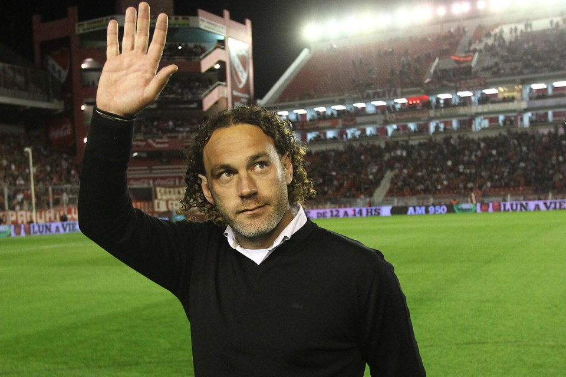
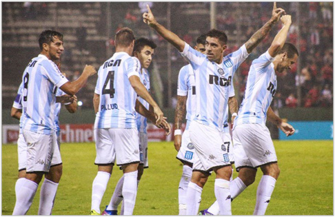
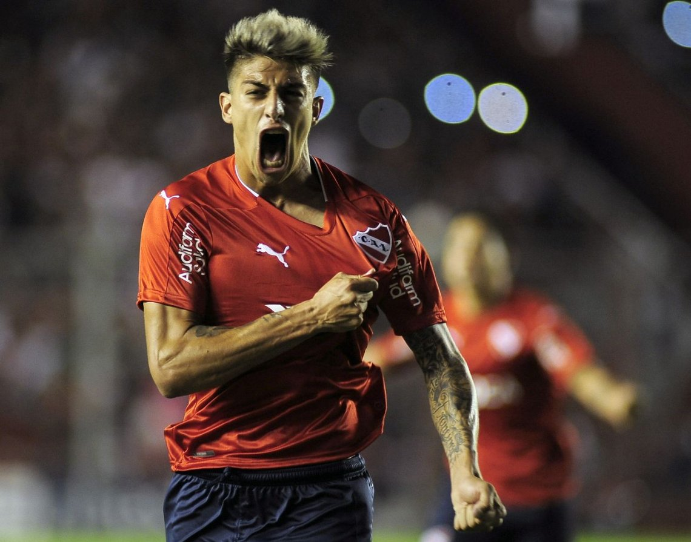
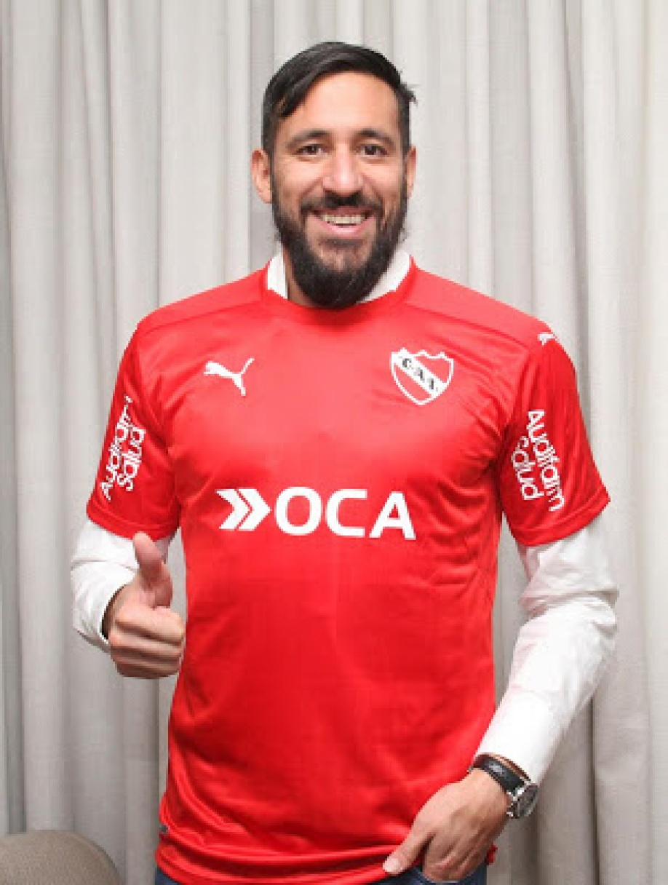
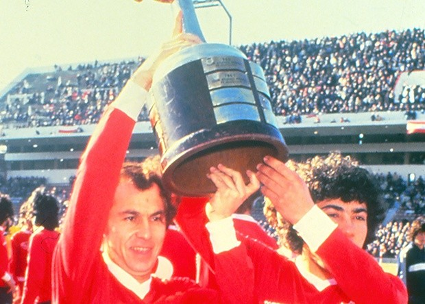

El equipo de Holan sigue ganando , gustando y goleando en la Copa Sudamericana , creciendo cada vez más la expectativa de ganarla y así clasificar a la Libertadores 2018 , aunque tiene algunas falencias en el equipo lo que lo hace estar algo rezagado en la Súper Liga
Allá por Diciembre de 2016 , Independiente no era el club lleno de ilusiones y a la expectativa de volver a reinar en el plano internacional como lo es ahora , en ese momento era un club totalmente impotente luego de la salida de Gabriel Milito, quien decidió dar un paso al costado por la falta de juego de su equipo , y su incapacidad de limpiar el plantel , fue entonces , cuando en medio de semejante desidia , fue contratado Ariel Holan quien no había sido la prioridad , sino que era una segunda o más bien tercera opción , sin pertenecer al ambiente del fútbol , ni haber tenido experiencia en otros equipos grandes o conseguido importantes títulos , no le fue fácil ganarse el aprecio de todos los hinchas , sino que era mirado con cierto recelo por algunos que pensaban que no era más que un "vende humo" que sólo había llegado por el audio en donde prácticamente había pedido dirigir al rojo.
El tiempo pasó, y llegó la hora de jugar los amistosos de verano , allí Independiente no consiguió ni buenos resultados ni buen juego , y comenzaron las primeras dudas acerca de si el entrenador merecía realmente el honor de dirigir al rey de copas , y es que la derrota primero (en Salta) , y el empate después (en Mar Del Plata) contra Racing pesaron en la hinchada, y el equipo que venía de ser abucheado la temporada pasada no iba a empezar esta de la mejor manera.
Es así como da arranque la temporada 2017 e Independiente poco a poco comienza a mejorar su juego y consigue grandes resultados , aumentando así el apoyo de la hinchada , pero el equipo tenía una importante deuda : GANAR DE LOCAL , y es que aún se notaban las grandes inseguridades , lo que lo llevó a perder partidos decisivos , pero el buen nivel de juego , la gran cantidad de partidos invictos , el gran despliegue de jugadores que antes eran abucheados ( como Sánchez Miño y Rigoni ,que fue uno de los mejores jugadores del torneo) y el reencuetro con la identidad del club , hizo que el equipo se afiance para el comienzo del segundo semestre
En el receso de invierno , se incorporaron al plantel jugadores para aportar experiencia a un equipo de jóvenes promesas como Bustos , Barco y Franco. Así Jonás Gutiérrez , Fernando Amorebieta , Emmanuel Gigliotti , Juan Manuel Martínez Y Nicolás Domingo se convierten en referentes del joven plantel.

El equipo , que a esta altura ya tiene un apoyo total de la gente, consiguió un gran funcionamiento en la copa , arrasando a sus rivales e ilusiona con grandes desempeños individuales como Bustos que se convirtió en el mejor lateral derecho de la Argentina , Tagliafico que se consolidó como el capitán del plantel y Meza que luego de la ida de Rigoni a Rusia , se transformó en el jugador más regular y desequilibrante del equipo.
Así Independiente está por disputar este 21/11 la semifinal ante Libertad , y el equipo que hace un año era repudiado , ahora tiene a sus hinchas completamente entusiasmados y a la espera de volver a ser lo que Independiente siempre fue , el REY DE COPAS.
